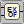
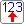
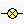
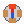
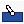
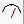

De onderdelenbalk staat bovenaan het paneel. Je kiest er een onderdeel en zet het daarna met een klik op het paneel. Is het venster te smal voor alle knoppen, dan komen de overige knoppen op een tweede rij.
Na de knop Verbinding volgen drie groepen knoppen: verwerking, uitvoer en voeding. In een schakeling staan de onderdelen van links naar rechts: invoer → verwerking → uitvoer.
| Knop | Naam | Wat doet het? |
|---|---|---|
| Verbinding | Zet de draadmodus aan of uit. Zie Verbindingen. |
De invoer staat in de groep Voeding en heeft klemmen. De schakelaar of drukknop, de wisselschakelaar, de impulsgenerator en de dipschakelaar zet je tussen de + rail en de ingang. De LDR en de NTC krijgen er een weerstand naar de − rail bij (een spanningsdeler); het signaal komt van de klem tussen de sensor en de weerstand. De oude invoer zonder klemmen (zie Invoer) staat niet meer in de balk.
| Knop | Naam | Wat is het? |
|---|---|---|
 | EN-poort | Uitgang aan als alle ingangen aan zijn. |
 | OF-poort | Uitgang aan als minstens één ingang aan is. |
 | NIET-poort | Keert het signaal om. |
 | NEN-poort | Uitgang uit als beide ingangen aan zijn. |
 | NOF-poort | Uitgang aan als beide ingangen uit zijn. |
 | EX-OF-poort | Uitgang aan als precies één ingang aan is. |
 | Tellerblok | Telt pulsen en geeft de stand binair door. |
 | Flipflop | Onthoudt één bit (SR, D, JK of T). |
 | Stappenteller | Telt pulsen tot 9999 en toont de stand op een display. |
 | Stopwatch | Meet de tijd (MM:SS) zolang S aan is; Q gaat aan bij de eindtijd. |
 | Geheugenblok | Geeft de inhoud van een gekozen geheugenplaats door. |
De lamp, de zoemer en het relais staan in de groep Voeding: ze hebben twee klemmen, tussen de uitgang van een poort en de − rail. De oude lamp, zoemer en relais zonder klemmen (zie Uitvoer) staan niet meer in de balk; alleen de oude lamp kan je nog zelf aanzetten bij Instellingen.
| Knop | Naam | Wat is het? |
|---|---|---|
 | Motor | Draait linksom (ingang L) of rechtsom (ingang R). |
 | 7-segmentdisplay | Toont een cijfer of letter. |
 | Voltmeter | Toont de spanning, bijvoorbeeld 3,3 V. |
 | Milliampèremeter | Toont de stroom in mA; je zet hem in serie in de kring. |
 | Wattmeter | Toont het vermogen in W van alles wat erachter hangt. |
 | Persoon | Loopt naar links (ingang L) of rechts (ingang R); eindschakelaars S1 en S2 melden waar hij staat. |
| Wagentje | Rijdt vooruit (ingang V) of achteruit (ingang A) over een kronkelweg; Start, Finish en Tel (een puls bij elk paaltje) melden waar het is. | |
| Muziekdoos | Klavier met 8 pianotoetsen (do tot do'), een ingang per toets: aan is de toets oplichten en de noot laten klinken. | |
 | Verkeerslicht | Verkeerslicht voor auto's (rood, oranje, groen) met een voetgangerslicht; vijf ingangen, zoals UIT0 tot UIT4 van LogicRun. |
 | Slagboom | Slagboom van een parking; ingang O opent de boom, eindschakelaars Dicht en Open. |
| Knop | Naam | Wat is het? |
|---|---|---|
 | + rail | Voedingsrail voor de invoer; de spanning komt van de bron. |
 | − rail | Massarail (0 V) voor de uitvoer. |
 | Bron (accu) | Spanningsbron van 0 tot 12 V met schuifregelaar. |
 | Wisselspanningsbron | Wisselspanning tot 12 V top, vertraagd tot 0,5, 1 of 2 Hz. |
 | Zekering | Smelt als er te veel stroom loopt. |
 | Weerstand (contact) | Contact of draad met een kleine weerstand: spanningsval U = I × R. |
 | Potentiometer | Weerstand met een loper en drie klemmen (A, B en L); sleep de loper met de muis. |
 | LDR | Lichtgevoelige weerstand; regel het licht met de schuifknop. |
 | NTC | Temperatuurgevoelige weerstand; regel de temperatuur met de schuifknop. |
 | Lamp | Lamp met twee klemmen, voor 12 V of 5 V; een lamp voor 5 V brandt ook aan een poort. Rechtsklik › Kleur: rood, groen of oranje. |
 | Zoemer | Zoemer met twee klemmen: zoemt vanaf 10 mA, ook aan een poort. |
 | Relais | Spoel met twee klemmen en een wisselcontact (C, maak, verbreek). |
 | Led met 2 klemmen | Geleidt maar in één richting; hoort met een voorschakelweerstand. |
 | Diode | Laat stroom maar in één richting door (van A naar K), boven 0,7 V. |
 | Condensator | Laadt op en ontlaadt in de tijd. |
 | Schakelaar of drukknop | Schakelaar met twee klemmen; met rechtsklik › Soort › Drukknop wordt het een drukknop. |
 | Wisselschakelaar | Drie klemmen: het midden is verbonden met A of met B. Twee ervan schakelen een lamp vanaf twee plaatsen (trap). |
 | Impulsgenerator | Schakelaar die vanzelf opent en sluit: pulsen van 0,5 tot 5 Hz. |
 | Dipschakelaar | Vier schakelaartjes: een getal van 0 tot 15 op de uitgangen 8, 4, 2 en 1. |
| Voltmeter met 2 klemmen | Smalle knop met een V in een cirkel. Meet het spanningsverschil tussen zijn twee klemmen. | |
 | Oscilloscoop | Tekent de spanning tussen + en − in de tijd. |
| Transistor | NPN of PNP met drie klemmen (C, B en E): Ic = β × Ib. | |
 | Stappenmotor | Vier spoelen A tot D: elke spoel met stroom trekt de rotor een stap verder. |
 | Servomotor | Draait naar een hoek van 0 tot 180° volgens de spanning op S (0 tot 5 V). |
 | Ventilator | Gewone motor: draait rond zolang er stroom is, sneller bij meer spanning. |
 | Staafmagneet | Magneet met een noordpool (rood) en een zuidpool (blauw), zonder klemmen. |
 | Kompas | Een naald die langs het magnetisch veld wijst. |
 | Veldlijnenplaat | Toont de veldlijnen van de magneten die erop liggen, zoals ijzervijlsel. |
 | Spoel | Spoel met windingen in de stroomkring: met stroom wordt ze een magneet. |
 | Spijker | Een stukje ijzer: een magneet of een spoel met stroom trekt het aan. |
 | Relais (open model) | Spoel op een kern, een anker met een veer en drie contacten: zo werkt een relais vanbinnen. |
 | Stroomschommel | Een koperen staafje tussen de polen van een U-magneet: met stroom zwaait het uit (Lorentzkracht). |
 | Elektromotor (model) | Een spoeltje dat tussen twee polen draait, met collector en borstels. |
 | Nulpuntmeter | Galvanometer met de nul in het midden: toont de stroom en zijn richting. |
 | Draaiende magneet | Een sterke magneet op een as, zoals in een dynamo; klik om te laten draaien. |
| Transformator | Twee spoelen op een ijzeren kern: zet een wisselspanning omhoog of omlaag. | |
 | Arduino-ingang | Een echte drukknop op een pin van een Arduino-board, als drukknop met twee klemmen. |
 | Arduino-uitgang | Een lamp van 5 V die een echte pin van een Arduino-board hoog of laag zet. |
 | K8055-ingang | Een echte ingang (INP1 tot INP5) van een Velleman K8055, als drukknop met twee klemmen. |
 | K8055-uitgang | Een lamp van 5 V die een echte uitgang (OUT1 tot OUT8) van een Velleman K8055 aan of uit zet. |